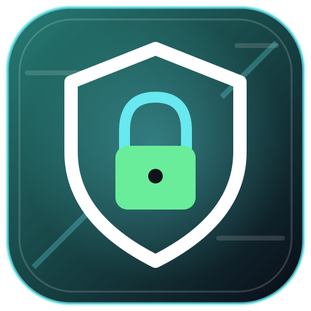
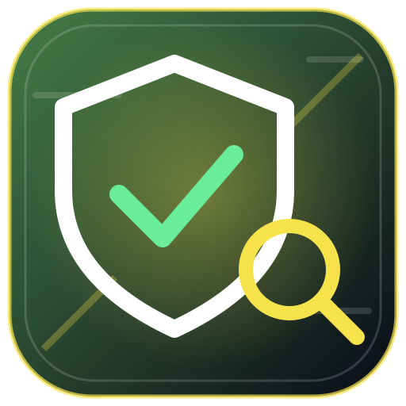

КАТАЛОГ OTKAT
Приложения
Игровые сборники и полезные утилиты. Открой карточку, чтобы узнать о проекте и посмотреть доступные загрузки.
Игровые сборники
Браузерные версии доступны на страницах приложений
Arcade Mix
RU: Arcade Mix
Neon Dodge, Sky Hop, Pulse Runner и другие мини-игры.
Открыть приложение ↗Puzzle Lab
RU: Puzzle Lab
Задачи на память, числа и последовательности.
Открыть приложение ↗Party Duo
RU: Party Duo
Локальные дуэли и соревнования на одном устройстве.
Открыть приложение ↗Action Rush
RU: Action Rush
Быстрые миссии, цели и защита базы.
Открыть приложение ↗Cozy Worlds
RU: Cozy Worlds
Сад, рыбалка, пары и спокойные задания.
Открыть приложение ↗Утилиты
Нативные Android-приложения

OTKAT VPN
RU: OTKAT VPN
VPN-клиент OTKAT. Публикация APK после сборки и проверки.
Открыть приложение ↗
VPN Check
RU: Проверка VPN
Проверка IP, сведений о сети, DNS и конфигураций.
Открыть приложение ↗Первые пять приложений — браузерные сборники. OTKAT VPN и VPN Check — нативные Android-проекты; APK появятся после успешной сборки и проверки. Не все платформы имеют отдельные версии.